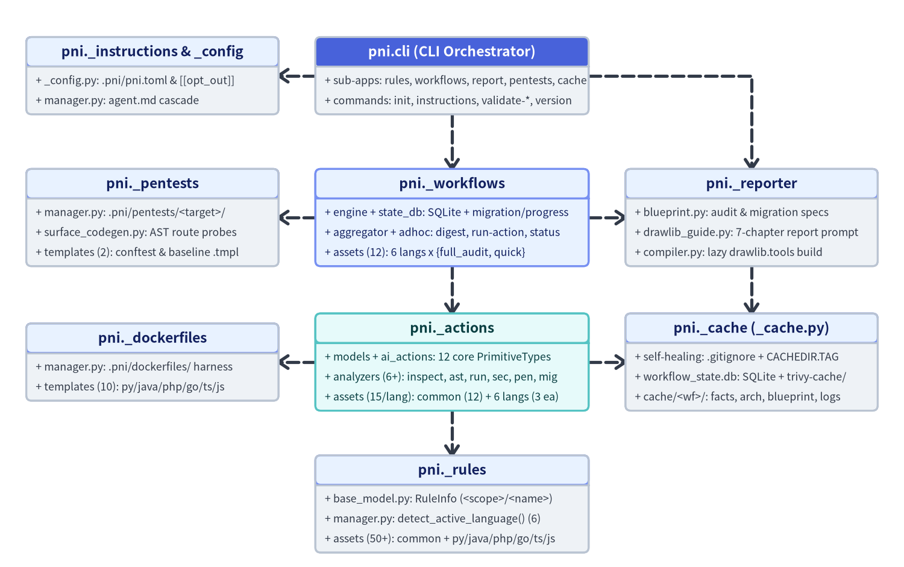
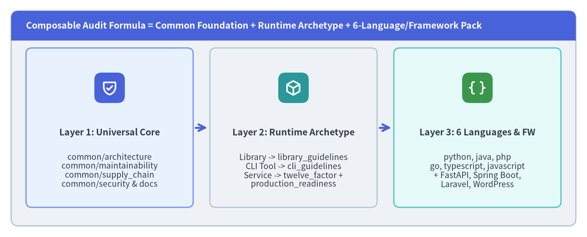
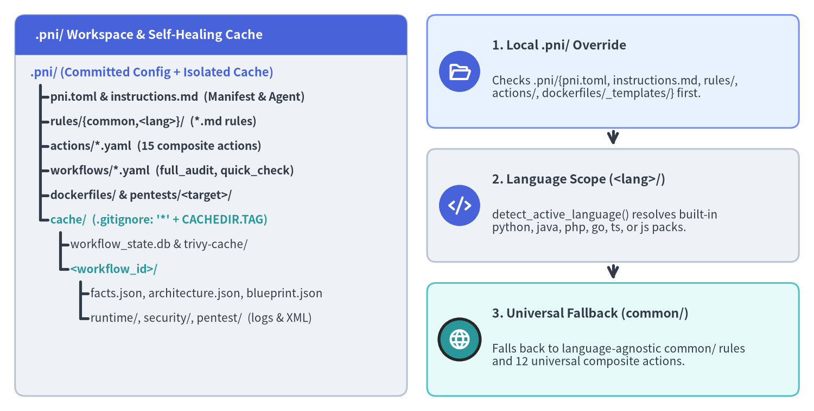

ドメインアーキテクチャと3層カスケード解決
pni501 (v0.1.4) は src/pni/ 配下の実装を、7つの垂直ドメインパッケージ（_workflows、_actions、_reporter、_rules、_pentests、_dockerfiles、_instructions）、プロジェクトマニフェストローダー（_config.py）、自己修復型キャッシュユーティリティ（_cache.py）、および軽量な Typer + Rich 製 CLI オーケストレーター（cli.py）に編成しています。各ドメインは 対応6言語（python、java、php、go、typescript、javascript）にわたる Pydantic v2 スキーマ、実行・解決ロジック、組み込みの .md / .yaml / .dockerfile / .tmpl アセットを同一パッケージ内に同居（コロケーション）させ、モジュールレベルの厳密な有向非巡回グラフ（circular_dependencies = []）を維持しています。

Source Code
from drawlib.canvas import save, setup
from drawlib.diagrams.class_diagram import ClassDiagram, ClassNode
from drawlib.styles import Colors, Styles
setup(width=172, height=108, dpi=150)
diagram = ClassDiagram(
node_style=Styles.Neutral.patch(text_size=10.0),
header_style=Styles.PrimaryNeutral.patch(text_size=10.5),
edge_style=Styles.DarkBold,
edge_text_style=Styles.PrimaryBold.patch(text_size=10.0),
)
inst_node = ClassNode(
"pni._instructions & _config",
width=48.0,
header_height=5.6,
row_height=3.8,
)
inst_node.add_attribute("_config.py", ".pni/pni.toml & [[opt_out]]")
inst_node.add_attribute("manager.py", "agent.md cascade")
diagram.add(inst_node, xy=(29.0, 93.5))
cli_node = ClassNode(
"pni.cli (CLI Orchestrator)",
width=52.0,
header_height=5.6,
row_height=3.8,
header_style=Styles.PrimaryFlat.patch(text_color=Colors.White, text_size=10.5),
)
cli_node.add_attribute("sub-apps", "rules, workflows, report, pentests, cache")
cli_node.add_attribute("commands", "init, instructions, validate-*, version")
diagram.add(cli_node, xy=(86.0, 93.5))
pentest_node = ClassNode(
"pni._pentests",
width=48.0,
header_height=5.6,
row_height=3.8,
)
pentest_node.add_attribute("manager.py", ".pni/pentests/<target>/")
pentest_node.add_attribute("surface_codegen.py", "AST route probes")
pentest_node.add_attribute("templates (2)", "conftest & baseline .tmpl")
diagram.add(pentest_node, xy=(29.0, 66.5))
wf_node = ClassNode(
"pni._workflows",
width=52.0,
header_height=5.6,
row_height=3.8,
style=Styles.PrimaryNeutral.patch(text_size=10.0),
)
wf_node.add_attribute("engine + state_db", "SQLite + migration/progress")
wf_node.add_attribute("aggregator + adhoc", "digest, run-action, status")
wf_node.add_attribute("assets (12)", "6 langs x {full_audit, quick}")
diagram.add(wf_node, xy=(86.0, 66.5))
rep_node = ClassNode(
"pni._reporter",
width=48.0,
header_height=5.6,
row_height=3.8,
)
rep_node.add_attribute("blueprint.py", "audit & migration specs")
rep_node.add_attribute("drawlib_guide.py", "7-chapter report prompt")
rep_node.add_attribute("compiler.py", "lazy drawlib.tools build")
diagram.add(rep_node, xy=(143.0, 66.5))
docker_node = ClassNode(
"pni._dockerfiles",
width=48.0,
header_height=5.6,
row_height=3.8,
)
docker_node.add_attribute("manager.py", ".pni/dockerfiles/ harness")
docker_node.add_attribute("templates (10)", "py/java/php/go/ts/js")
diagram.add(docker_node, xy=(29.0, 39.0))
act_node = ClassNode(
"pni._actions",
width=52.0,
header_height=5.6,
row_height=3.8,
style=Styles.SecondaryNeutral.patch(text_size=10.0),
header_style=Styles.SecondaryNeutral.patch(text_size=10.5),
)
act_node.add_attribute("models + ai_actions", "12 core PrimitiveTypes")
act_node.add_attribute("analyzers (6+)", "inspect, ast, run, sec, pen, mig")
act_node.add_attribute("assets (15/lang)", "common (12) + 6 langs (3 ea)")
diagram.add(act_node, xy=(86.0, 39.0))
cache_node = ClassNode(
"pni._cache (_cache.py)",
width=48.0,
header_height=5.6,
row_height=3.8,
)
cache_node.add_attribute("self-healing", ".gitignore + CACHEDIR.TAG")
cache_node.add_attribute("workflow_state.db", "SQLite + trivy-cache/")
cache_node.add_attribute("cache/<wf>/", "facts, arch, blueprint, logs")
diagram.add(cache_node, xy=(143.0, 39.0))
rules_node = ClassNode(
"pni._rules",
width=52.0,
header_height=5.6,
row_height=3.8,
)
rules_node.add_attribute("base_model.py", "RuleInfo (<scope>/<name>)")
rules_node.add_attribute("manager.py", "detect_active_language() (6)")
rules_node.add_attribute("assets (50+)", "common + py/java/php/go/ts/js")
diagram.add(rules_node, xy=(86.0, 12.0))
diagram.connect(cli_node, inst_node, "dependency", start_side="left", end_side="right")
diagram.connect(cli_node, wf_node, "dependency", start_side="bottom", end_side="top")
diagram.connect(cli_node, rep_node, "dependency", start_side="right", end_side="top")
diagram.connect(wf_node, pentest_node, "dependency", start_side="left", end_side="right")
diagram.connect(wf_node, rep_node, "dependency", start_side="right", end_side="left")
diagram.connect(wf_node, act_node, "dependency", start_side="bottom", end_side="top")
diagram.connect(act_node, docker_node, "dependency", start_side="left", end_side="right")
diagram.connect(act_node, cache_node, "dependency", start_side="right", end_side="left")
diagram.connect(rep_node, cache_node, "dependency", start_side="bottom", end_side="top")
diagram.connect(act_node, rules_node, "dependency", start_side="bottom", end_side="top")
diagram.draw(xy=(0.0, 0.0))
save()
1. 高凝集な垂直ドメインパッケージ設計 (src/pni/)
従来の CLI コードベースでは、Pydantic モデルを models/、YAML/Markdown ローダーを config/、サブプロセス実行器を executors/、静的ファイルを templates/ へと水平分割（レイヤー分割）しがちです。しかしこの構造では、1つの監査機能を追加・変更するたびに4つの離れたディレクトリを同時に編集する必要が生じ、人間のメンテナーにとっても AI コーディングエージェントにとってもコンテキスト負荷が増大します。
これに対し pni501 は、src/pni/ を 自己完結型の垂直ドメインパッケージ として構成しています。トップレベルの src/pni/__init__.py はパッケージ識別定数（LIB_NAME = "pni501"、LIB_VERSION = "0.1.4"、__version__）のみを公開し、各サブシステムが自身のスキーマ・オーケストレーションモジュール・組み込みテンプレートを単一の境界ディレクトリ内に同居させています。
| パッケージ / モジュール | 主要 Python モジュール | 主なスキーマと責務 | 同梱の組み込みアセット |
|---|---|---|---|
cli.py |
cli.py |
Typer ルート app + サブアプリ（rules, workflows, report, pentests, progress, cache）およびルートコマンド（init, instructions, validate-score, validate-migration-plan, version, --version / -V） |
Rich CLI ヘルプエピローグ & AI ブートストラップ案内 |
_workflows/ |
base_model.py, state_db.py, manager.py, engine.py, _migration_engine.py, _progress_engine.py, aggregator.py, adhoc.py, inspector.py |
WorkflowDefinition, WorkflowFactsBundle, WorkflowStateDB, CompiledAuditDigest。ステートフル Pull-Push エンジン、アドホック run-action、rewind、実行履歴の検査 |
6言語 × 2種のスターター（{python,java,php,go,typescript,javascript}/{full_audit,quick_check}.yaml、計 12 ファイル）で6種のステートフルワークフローを支援 |
_actions/ |
base_model.py, manager.py, ai_actions.py, project_inspect.py, _repo_governance.py, および ast_analyze/, runtime_check/, security_scan/, pentest/, migration_analyze/, progress_analyze/ |
PrimitiveType（主要 12 プリミティブ）、ScoreResult（7軸）、ArchitectureRecord、MigrationPlanResult、および6言語対応の決定論的ファクト抽出器 |
言語あたり 15 個の複合 YAML アクション（common/ 共通 12 個 + 各 <lang>/ 固有 3 個） |
_reporter/ |
base_model.py, blueprint.py, migration_blueprint.py, progress_blueprint.py, drawlib_guide.py, compiler.py |
ReportBlueprint, ReportScaffoldResult, ReportBuildResult。7章構成の監査・移行ブループリントの事前編成、utils.py への draw_pni_logo() スキャフォールド、compiler.py での drawlib.tools 遅延インポート |
7章構成 Drawlib doc スキャフォールド、章リンター、および _assets/{logo.png,logo_dark.png,favicon.png} |
_rules/ |
base_model.py, manager.py |
RuleInfo, SUPPORTED_LANGUAGES = ("python", "java", "php", "go", "typescript", "javascript"), detect_active_language()、および <scope>/<name> カスケード解決 |
common/ と6言語パック（python/, java/, php/, go/, typescript/, javascript/）にわたる 50+ 個の Markdown ルール |
_pentests/ |
manager.py, surface_codegen.py |
ターゲット別の pytest + httpx Web ペネトレーションテストを .pni/pentests/<target>/ に生成・検証し、AstFacts.api_endpoints から test_target_surface.py を自動生成 |
プローブテンプレート 2 種: conftest.py.tmpl, test_baseline_http.py.tmpl |
_dockerfiles/ |
manager.py |
.pni/dockerfiles/_templates/ オーバーライドまたは組み込みコンテナハーネスを解決し、分離 .dockerignore とともに .pni/dockerfiles/ に展開（prune_pni_container_artifacts() も提供） |
10 テンプレート: python/{pip,poetry,uv}, java/{gradle,maven}, php/{composer,raw}, go/go, typescript/node, javascript/node.dockerfile |
_instructions/ & _config.py |
base_model.py, manager.py, _config.py |
InstructionInfo, PniConfig, OptOutEntry。.pni/instructions.md および .pni/pni.toml プロジェクトマニフェスト・[[opt_out]] 免除設定を解決 |
agent.md およびデフォルト .pni/pni.toml テンプレート |
_cache.py |
_cache.py |
自己修復型 .pni/cache/ 初期化（ensure_cache_dir, ensure_cache_parent）とワークスペース安全なパス解決（normalize_target_subpath） |
自動生成される .pni/cache/.gitignore (*) と CACHEDIR.TAG |
Python モジュールと静的アセットを同一パッケージ内に配置することで、開発時の editable インストールでも配布用 wheel パッケージでも BUILTIN_*_DIR = Path(__file__).resolve().parent が常に決定論的に解決されます。
2. モジュールレベル依存関係階層と遅延ツーリング分離
src/pni/ 内のすべての import は厳密な モジュールレベル有向非巡回グラフ（DAG） を形成しており、pni501 自身の src/pni/ ツリーに対する ast_analyze によって継続的に検証されています（circular_dependencies = []）。
- CLI オーケストレーター (
src/pni/cli.py): ユーザー引数をパースし、Rich テーブルや Markdown パネルを整形して、_workflows、_actions、_reporter、_rules、_pentests、_instructions、_config、_cacheへコマンドをディスパッチします。内部モジュールがpni.cliを逆インポートすることは一切ありません。 - ステートフルワークフロー制御 (
src/pni/_workflows/):engine.py、_migration_engine.py、_progress_engine.pyが SQLite 永続化（state_db.py）、Pre-Flight 前提条件ゲート（based_on監査完了確認および.pni/pentests/準備検証）、決定論的ステップ実行、パスグラウンディング検証、およびaggregator.pyによる7軸スコア統合（compile_workflow_digest）を統括します。プロトコルの詳細は ステートフル Pull-Push エンジン を参照してください。adhoc.py（pni workflows run-action）は SQLite の事前準備なしで単一アクションをオンメモリ実行し、inspector.pyは生 SQL クエリを露出させずにpni workflows statusやinspect-actionを提供します。
- アクションサブシステムと補助ハーネス (
_actions/,_reporter/,_pentests/,_dockerfiles/):_actions/base_model.py、_actions/ast_analyze/models.py、_actions/migration_analyze/models.py内の純粋な Pydantic データモデルが共有 Leaf スキーマ契約として機能し、実行ランナーの循環インポートを引き起こすことなく_reporter/blueprint.py、_reporter/migration_blueprint.py、_pentests/surface_codegen.pyから安全に参照されます。_actions/runtime_check/、_actions/security_scan/、_actions/pentest/の実行ランナーはコンテナハーネス構築を_dockerfilesに、プローブ生成を_pentestsに委譲し、_actions/ai_actions.pyはレポート作成プロンプトの生成を_reporter/drawlib_guide.pyに委譲します。_reporter/compiler.pyは型付き_DrawlibToolsProtocolを介してimportlib.import_module("drawlib.tools")を 遅延ロード するため、pni reportが呼ばれるまで Matplotlib/Cairo 描画スタックを読み込まず、pni rules、pni workflows、pni initを高速に保ちます。
- 兄弟依存ゼロの基盤パッケージ (
_rules/,_instructions/,_cache.py): 他のpni._*パッケージを一切インポートせず、6言語の自動検出、Markdown カスケード検索、パストラバーサル防止付きキャッシュ管理を提供します。
3. 直交タクソノミー：普遍的アーキタイプ vs. 言語・フレームワークパック
静的解析ツールチェーンで陥りがちなアンチパターンは、アーキテクチャ・セキュリティ・運用ルールをプログラミング言語ごとに重複して書き直すことです。pni501 では、ルール（src/pni/_rules/）と複合アクション（src/pni/_actions/）を2つの直交する軸で分離しています。
- 普遍的エンジニアリング標準 (
common/*): 実装言語に依存しない不変条件を規定します。レイヤー間の依存方向（common/architecture）、SIG 単位複雑度上限（common/maintainability）、OpenSSF ロックファイル・CI トークン衛生（common/supply_chain）、OWASP シークレット・インジェクション防御（common/security,common/security_vulnerability）、12-Factor ステートレス性（common/twelve_factor）、Google SRE I/O タイムアウト（common/production_readiness）、clig.devCLI 人間工学（common/cli_guidelines）、公開ライブラリ API 契約（common/library_guidelines）、Diátaxis ドキュメント標準（common/documentation）が含まれます。 - 言語コアパック (
<lang>/*): Python、Java、PHP、Go、TypeScript、JavaScript の6言語それぞれについて、構文イディオム、コンパイラ・型チェッカーの厳格性、パッケージマネージャマニフェスト、単体テスト規約を規定し、3つの言語別複合アクション（<lang>_ast_audit、<lang>_test_audit、repo_structure_audit）と対になります。 - フレームワークオーバーレイ (
<lang>/frameworks/*):python/frameworks/fastapi、java/frameworks/spring_boot、php/frameworks/laravel、php/frameworks/wordpressなど、フレームワーク固有のライフサイクルや DI パターンを規定します。

Source Code
from drawlib.canvas import save, setup
from drawlib.icons import phosphor
from drawlib.smartarts import CardList, Panel
from drawlib.styles import Styles
setup(width=158, height=64, dpi=150)
panel = Panel(
"Composable Audit Formula = Common Foundation + Runtime Archetype + 6-Language/Framework Pack",
header_variant="filled",
style=Styles.Neutral.patch(shape_r=2.0),
header_style=Styles.PrimaryFlat,
text_style=Styles.WhiteBold.patch(text_size=11.0),
)
panel.draw(xy=(3.0, 3.0), width=152.0, height=58.0)
layers = CardList(
style=Styles.PrimaryNeutral.patch(shape_r=1.6),
text_style=Styles.DarkBold.patch(text_size=11.0),
description_style=Styles.Dark.patch(text_size=10.0),
badge_shape="rounded_rect",
badge_style=Styles.PrimaryFlat,
badge_text_style=Styles.WhiteBold.patch(text_size=10.0),
icon_style=Styles.WhiteBold,
direction="horizontal",
show_arrows=True,
arrow_style=Styles.PrimaryBold,
spacing=4.5,
)
layers.add(
"Layer 1: Universal Core",
"common/architecture\ncommon/maintainability\ncommon/supply_chain\ncommon/security & docs",
icon=phosphor.shield_check,
)
layers.add(
"Layer 2: Runtime Archetype",
"Library -> library_guidelines\nCLI Tool -> cli_guidelines\nService -> twelve_factor +\nproduction_readiness",
style=Styles.Neutral.patch(shape_r=1.6),
badge_style=Styles.SecondaryFlat,
icon=phosphor.cube,
)
layers.add(
"Layer 3: 6 Languages & FW",
"python, java, php\ngo, typescript, javascript\n+ FastAPI, Spring Boot,\nLaravel, WordPress",
style=Styles.SecondaryNeutral.patch(shape_r=1.6),
badge_style=Styles.SuccessFlat,
icon=phosphor.brackets_curly,
)
layers.draw(xy=(7.0, 8.0), width=144.0, height=43.0)
save()
4. .pni/ ワークスペース構成と3層カスケード解決
pni init [--lang/-l <python|java|php|go|typescript|javascript>] [--force/-f] を実行すると、src/pni/cli.py の init_project() が呼び出され、検出された言語に応じた透明性の高い .pni/ 設定ディレクトリを展開するとともに、自己修復型の .pni/cache/ 階層を初期化します。

Source Code
from drawlib.canvas import save, setup
from drawlib.icons import phosphor
from drawlib.smartarts import CardList, Panel, TreeNode
from drawlib.styles import Styles
setup(width=162, height=82, dpi=150)
left_panel = Panel(
".pni/ Workspace & Self-Healing Cache",
header_variant="filled",
style=Styles.Neutral.patch(shape_r=2.0),
header_style=Styles.PrimaryFlat,
text_style=Styles.WhiteBold.patch(text_size=11.0),
)
left_panel.draw(xy=(3.0, 3.0), width=78.0, height=76.0)
root = TreeNode(
".pni/ (Committed Config + Isolated Cache)",
text_style=Styles.PrimaryBold.patch(text_size=10.5),
line_style=Styles.DarkBold,
line_horizontal_margin=2.0,
line_horizontal_length=2.2,
line_vertical_margin=4.9,
)
root.add("pni.toml & instructions.md (Manifest & Agent)", text_style=Styles.DarkBold.patch(text_size=10.0))
root.add("rules/{common,<lang>}/ (*.md rules)", text_style=Styles.DarkBold.patch(text_size=10.0))
root.add("actions/*.yaml (15 composite actions)", text_style=Styles.DarkBold.patch(text_size=10.0))
root.add("workflows/*.yaml (full_audit, quick_check)", text_style=Styles.DarkBold.patch(text_size=10.0))
root.add("dockerfiles/ & pentests/<target>/", text_style=Styles.DarkBold.patch(text_size=10.0))
cache_dir = root.add(
"cache/ (.gitignore: '*' + CACHEDIR.TAG)",
text_style=Styles.SecondaryBold.patch(text_size=10.0),
)
cache_dir.add("workflow_state.db & trivy-cache/", text_style=Styles.Dark.patch(text_size=10.0))
wf_cache = cache_dir.add("<workflow_id>/", text_style=Styles.SecondaryBold.patch(text_size=10.0))
wf_cache.add("facts.json, architecture.json, blueprint.json", text_style=Styles.Dark.patch(text_size=10.0))
wf_cache.add("runtime/, security/, pentest/ (logs & XML)", text_style=Styles.Dark.patch(text_size=10.0))
root.draw(xy=(6.0, 67.5))
cascade_cards = CardList(
style=Styles.PrimaryNeutral.patch(shape_r=1.8),
text_style=Styles.DarkBold.patch(text_size=11.0),
description_style=Styles.Dark.patch(text_size=10.0),
badge_shape="circle",
badge_style=Styles.PrimaryFlat,
badge_text_style=Styles.WhiteBold.patch(text_size=10.5),
icon_style=Styles.WhiteBold,
direction="vertical",
spacing=3.8,
show_arrows=True,
arrow_style=Styles.DarkBold,
)
cascade_cards.add(
"1. Local .pni/ Override",
"Checks .pni/{pni.toml, instructions.md, rules/,\nactions/, dockerfiles/_templates/} first.",
icon=phosphor.folder_open,
)
cascade_cards.add(
"2. Language Scope (<lang>/)",
"detect_active_language() resolves built-in\npython, java, php, go, ts, or js packs.",
style=Styles.Neutral.patch(shape_r=1.8),
icon=phosphor.code,
)
cascade_cards.add(
"3. Universal Fallback (common/)",
"Falls back to language-agnostic common/ rules\nand 12 universal composite actions.",
style=Styles.SecondaryNeutral.patch(shape_r=1.8),
badge_style=Styles.SecondaryBold,
icon=phosphor.globe,
)
cascade_cards.draw(xy=(85.0, 3.0), width=74.0, height=76.0)
save()
自己修復型キャッシュとターゲット別ワークスペース成果物
ホストプロジェクトのルート .gitignore を直接書き換える代わりに、src/pni/_cache.py（ensure_cache_dir() および ensure_cache_parent()）は .pni/cache/ を 自己修復型（Self-Healing） として管理します。
- Git およびバックアップからの自動除外:
.pni/cache/への書き込みが行われるたびに、.pni/cache/.gitignore（*）と標準CACHEDIR.TAGシグネチャ（8a477f597d28d172789f06886806bc55）の存在が自動的に保証されます。これにより、.pni/を初期化していないリポジトリであっても、SQLite データベース、Trivy 脆弱性 DB キャッシュ（trivy-cache/）、JUnit XML レポート、コンテナログが Git ステータスやバックアップアーカイブに混入しません。 - ワークフロー単位で分離された一時状態 (
.pni/cache/<workflow_id>/): 各ワークフローは、集約スナップショットをfacts.json、グラウンディング検証済みの3側面アーキテクチャモデルをarchitecture.json、事前ソート済みレポート仕様をblueprint.json（またはmigration_facts.json/migration_blueprint.json）に出力し、各ステージの生ログをruntime/、security/、pentest/に格納します。 - パストラバーサル防止付きマルチターゲットハーネス (
.pni/dockerfiles/&.pni/pentests/):normalize_target_subpath()が絶対パスや..トラバーサルを拒否しつつ、モノレポ内のサブターゲットをクリーンにマッピングします（例:targets.root: examples/php/legacy_shop_messyは.pni/dockerfiles/examples/php/legacy_shop_messy/Dockerfileおよび.pni/pentests/examples/php/legacy_shop_messy/に展開されます）。
3層カスケードと6言語解決ルール
チームは pni init で生成された .pni/ ファイル一式をそのままコミットして管理することも、未変更のファイルを削除してカスタマイズしたいオーバーライドファイルのみを残すことも可能です。
- アクティブ言語の自動検出 (
_rules/manager.py):detect_active_language(project_root)は厳密な優先順位でマニフェストを検査します。Python（pyproject.toml,setup.py,requirements.txt）、Java（pom.xml,build.gradle*,settings.gradle*）、PHP（composer.json,wp-config*.php,artisan,phpunit.xml*）、Go（go.mod,go.work）、Node/フロントエンド（tsconfig*.json,jsconfig.json,package.jsonからtypescriptとjavascriptを判別）を順に確認し、該当しない場合はソースツリー内の拡張子ヒューリスティクス（*.java,*.php,*.go,*.ts/*.tsx,*.js/*.jsx）へフォールバックし、最終的に"python"をデフォルトとします。言語別解析器の詳細は 対応 6 言語マトリクス を参照してください。 - エンジニアリングルール (
local > <lang> > common):list_rules()は組み込みのsrc/pni/_rules/とローカルの.pni/rules/から("common", active_lang)（--all指定時は全SUPPORTED_LANGUAGES）の(scope, name)候補を統合し、.pni/rules/<scope>/<name>.md（is_local=True）を優先します。get_rule_content()はハイフンとアンダースコアを正規化した上で、完全一致<scope>/<name>-><active_lang>/<name>->common/<name>-> 任意スコープの一致ルール名の4段階で解決します。 - 複合アクション (
local > <lang> > common):load_composite_action()は.pni/actions/<id>.yaml（またはスコープ付き.pni/actions/<scope>/<id>.yaml）を最優先で解決し、次に組み込みの<active_lang>/<id>.yaml（これによりuses: repo_structure_auditが自動的にpython/,java/,php/,go/,typescript/,javascript/のいずれかにディスパッチされます）、最後にcommon/<id>.yamlへフォールバックします。全カタログは 15 アクションと 12 プリミティブ を参照してください。 - コンテナハーネス・マニフェスト・エージェント指示書:
resolve_template_dockerfile()は.pni/dockerfiles/_templates/<lang>/<tool>.dockerfileを組み込みsrc/pni/_dockerfiles/<lang>/<tool>.dockerfileより優先（言語別フォールバックはpip,maven,composer,go,node）し、load_pni_config()は.pni/pni.tomlを読み込み、get_instructions_info()は.pni/instructions.mdをsrc/pni/_instructions/agent.mdより優先します。
# アクティブなルール、複合アクション、カスケードのオーバーライド状態を確認
pni rules list --all
pni rules show common/architecture
pni workflows show full_audit